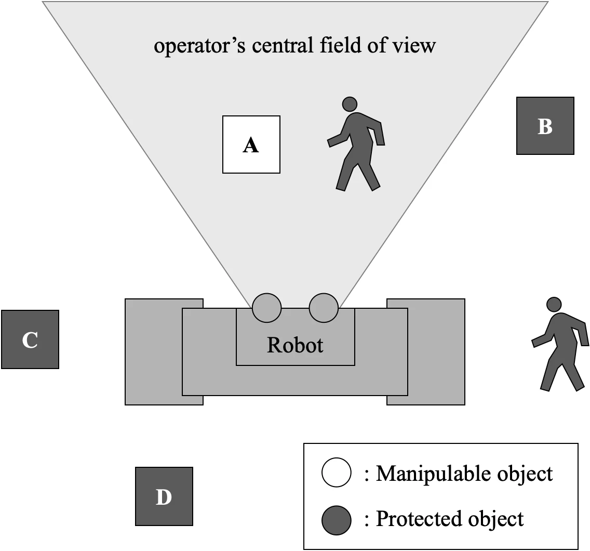
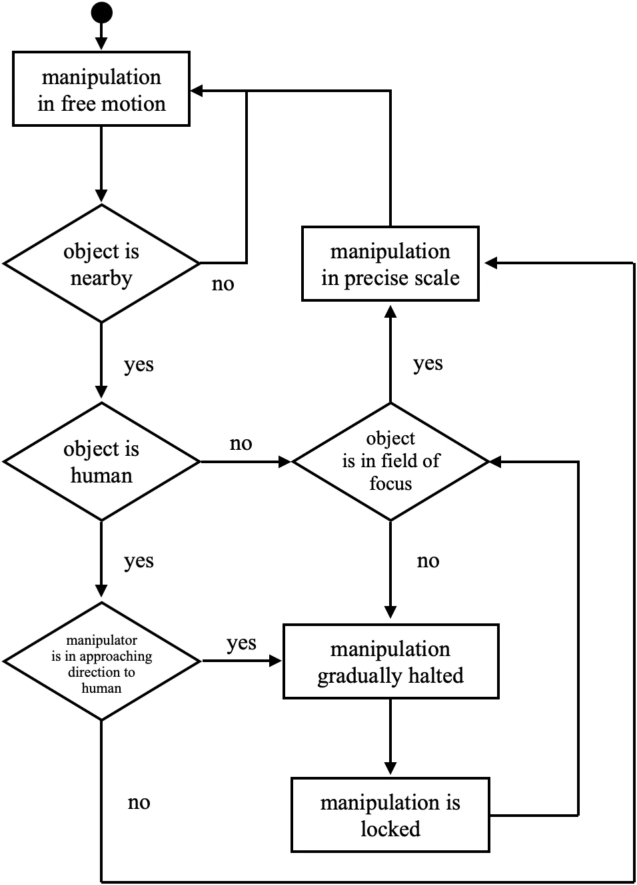
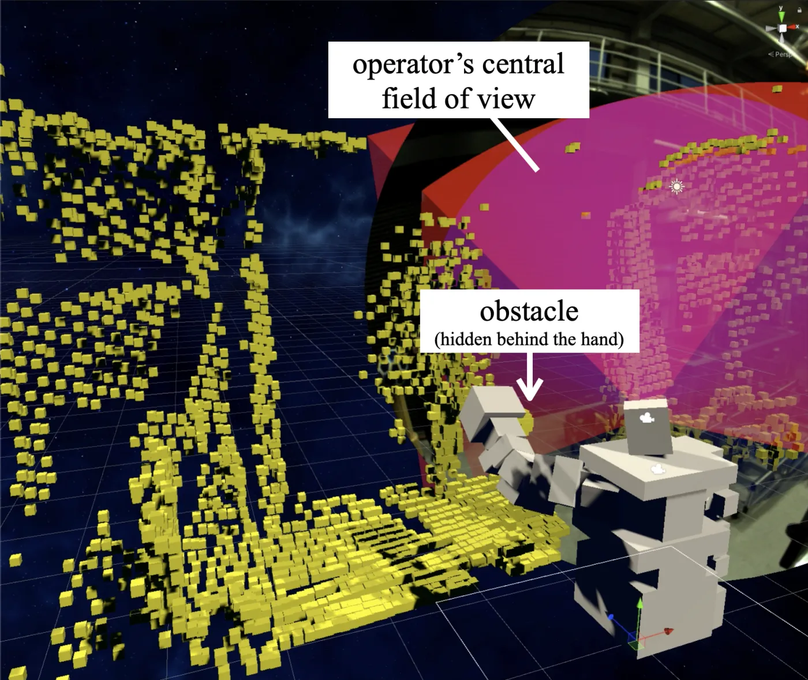
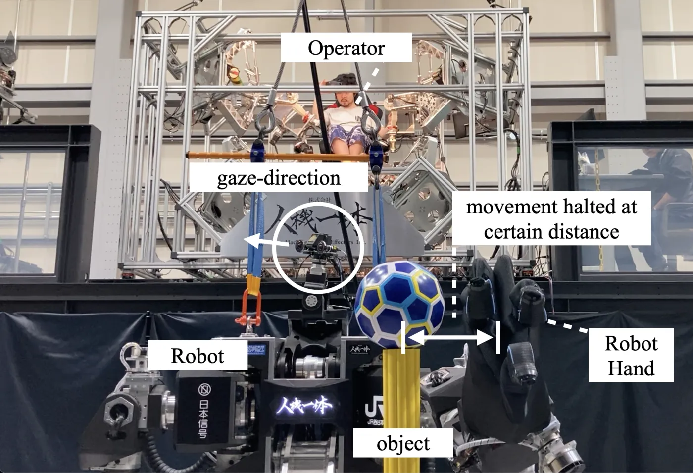
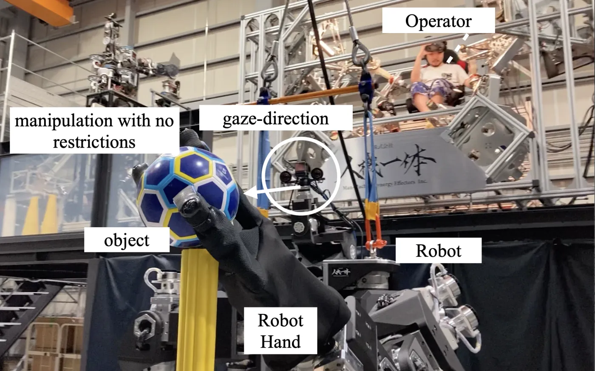

Master's Thesis on Human–Robot Interaction Design
July 2021
Overview
For large human-operated robots, environmental sensors alone can struggle to distinguish an intentional approach to a work target from an unintended approach to an overlooked obstacle. I designed a collision-prevention system that uses the operator’s estimated field of view as a cue to intended contact, slowing or stopping the arm as it approaches objects outside that field.
Objects do not need to be classified in advance as “operable” or “protected”; the classification updates as the operator looks around. In the prototype, I used headset orientation as a proxy for gaze. I implemented the system on a 1.9-meter-tall humanoid heavy-duty robot and confirmed the intended behavior in five demonstration trials. The demo video shows the system in action.
I carried out this research during an internship at Jinki Ittai Co., Ltd. for my master’s thesis in Design & Engineering at Politecnico di Milano. I presented it at the 39th Annual Conference of the Robotics Society of Japan (RSJ2021).


Problem: Safety setup can limit fieldwork
Human-operated robots are needed in environments that have not been prepared for autonomous operation. On construction sites and in disaster areas, the positions of people and equipment change, as do the objects the robot needs to touch. To make use of a machine’s strength, operators must be able to work with those objects while avoiding unintended contact.
Existing collision-avoidance approaches include covering the robot with proximity sensors and reconstructing its surroundings in a virtual space using depth sensors. In the approaches examined here, objects had to be classified in advance as either “operable” or “protected.” Without that classification, the robot would avoid all contact; classifying every object required site-specific setup and calibration. This preparation made the robots less practical to use across different locations.
Idea: Use gaze to define when contact is allowed
A human-operated robot already has someone assessing the situation within its control loop. I wondered whether giving the machine a cue to that person’s attention could help it infer intended contact during a task, without requiring objects to be registered in advance.
I used the operator’s central field of view as the boundary. Objects inside it are classified as “operable,” on the assumption that the operator is aware of them. Objects outside it are classified as “protected,” because they may have been overlooked. The design specifies that people must always be protected, regardless of gaze direction.
The system does not use gaze to issue commands directly. Instead, it translates the area in which the operator is assumed to be aware of objects into conditions on the robot’s movement.

Interaction design
The system treats gaze as more than an on/off switch. As the arm approaches an object outside the operator’s field of view, it slows gradually with distance and stops before contact. Looking toward the object then gradually releases the restriction. I designed these transitions to avoid abrupt stops and starts and make changes easier to anticipate.
Briefly looking away from an object already in contact with the robot does not interrupt the task. Stopping a grasp or manipulation solely because the operator looks away could make the operation less stable. The design treats approaches to people separately: these should remain restricted regardless of the operator’s gaze. Human detection was not implemented in this prototype.
The goal was to preserve the robot’s capabilities where the operator was aware of the surroundings and restrict movement where their attention might not reach. This was intended to balance safety and ease of operation without slowing every action.

Intended applications
The intended settings were construction sites and disaster areas, where machines exert large forces close to people. These environments are difficult to fence off completely, and registering every object in advance is impractical. Reconfiguring safety settings after every change in layout would make the system less adaptable and slower to deploy in urgent situations.
Gaze-based classification uses the operator’s moment-to-moment awareness rather than a fixed classification of the environment. It could reduce site preparation while restricting approaches to overlooked objects. This study, however, confirmed only that the system behaved as specified; it did not evaluate whether the approach reduced accidents in real-world use.
Prototype and preliminary evaluation
Implementation
I implemented the system on a robot shaped like a human upper body, standing 1.9 meters tall, weighing 600 kg, and having 30 degrees of freedom. The operator wears a VR headset that synchronizes the robot’s view and head orientation with their own movements.
A lidar sensor on the robot captured the workspace as a point cloud, which was represented in the virtual environment as voxels with collision detection. A digital twin synchronized the virtual robot with the physical machine. I represented the operator’s central field of view as a 60° × 55° viewing volume, using the forward direction of the headset to approximate its orientation. When the arm approached a voxel outside this area, the system sent a warning to the physical robot to slow or stop its movement.

Preliminary evaluation
Each trial followed the same sequence: approach a target outside the operator’s estimated field of view, turn the headset toward it after the arm stops to release the restriction, and then grasp the ball. An experienced operator performed four of the five trials; the remaining trial was performed by an operator using the cockpit for only the second time. In every trial, the arm stopped while the target was outside the estimated field of view and could resume when it entered that area. These trials checked whether the intended behavior worked on the physical robot. They did not evaluate its effectiveness in a user study.


Limitations and next steps
The prototype did not include human detection. Although the design specifies that people must always be protected, a real-world system would need a reliable way to identify them. The prototype also used the headset’s forward direction as a proxy for gaze, so it could not detect eye movements independent of head movements.
A stationary camera or eye-tracking smart glasses would change the wearable requirements and gaze-estimation accuracy. Extending the system to a mobile robot would also require point-cloud processing that accounts for changes in the robot’s own position.
The evaluation was limited to qualitative checks in five demonstration trials. Assessing safety, task speed, and operator workload would require quantitative comparisons with conventional methods under real working conditions.
What I learned
This research used the operator’s estimated field of view to define which machine actions to permit. The robot’s behavior toward the same object changed with the operator’s apparent awareness of it. My focus was the relationship between the operator’s apparent awareness and the scope of the machine’s actions, rather than individual movements.
This perspective still shapes the work in my portfolio: understand a person’s state, translate it into constraints the system must respect, and let machines or AI work within those boundaries. My master’s research was the starting point for this approach.
Acknowledgments
I conducted this research during an internship at Jinki Ittai Co., Ltd. as part of the master’s program in Design & Engineering at Politecnico di Milano. I am grateful to both organizations for making it possible.
Takafumi Horiuchi and Katsuya Kanaoka. “Gaze-based Unintended Contact Prevention for Human-Operated Robots.” The 39th Annual Conference of the Robotics Society of Japan, 2021, 2J2-07. Conference program